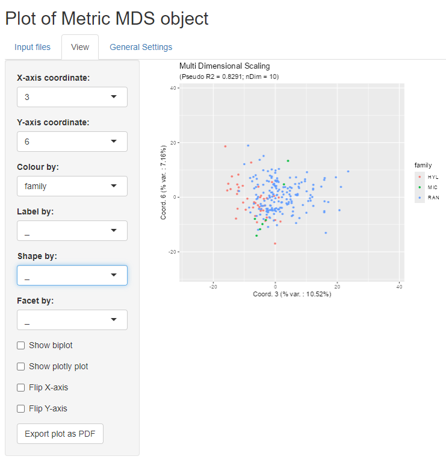

Preparing `MDSvis` input objects from a distance matrix and sample properties
Philippe Hauchamps
Shabnam Zaman
Source:vignettes/MDSvis_Input_From_Distance.Rmd
MDSvis_Input_From_Distance.RmdAbstract
This vignette shows an example of building input objects for
using MDSvis. Here the starting point is: (1) a
pairwise distance matrix, where each row and each column
correspond to one sample, and (2) additional sample specific
properties. This vignette is distributed under a CC BY-SA 4.0
license.
Introduction
This short vignette is complementary to the main MDSvis package vignette, which
provides an overview of MDSvis Shiny application (app)
features.
Here we focus on ‘how to’ create some input objects, which need to be provided to the Shiny app. In this vignette, we show that we can take advantage of the Multi Dimensional Scaling (MDS) interactive visualisations, starting from any distance matrix, and some sample specific properties.
Installation and loading dependencies
To install this package, start R and enter (un-commented):
if (!require("BiocManager", quietly = TRUE))
install.packages("BiocManager")
if (!require("MDSvis", quietly = TRUE))
BiocManager::install("MDSvis")We now load the packages needed in the current vignette:
Dataset
For this vignette, we use the frog skin active peptide (fsap) dataset. It consists of 226 samples, where each sample represents an amino acid sequence corresponding to a reported amphibian host defense peptide.
Distances between these peptides can be obtained using pairwise alignments and computing an appropriate dissimilarity metric between their amino acid sequences. For details, see the fsap dataset methods section below.
On top of the peptide distances, peptide properties have also been
collected:
- Uniprot accession number
- taxonomic family, genus, species
- some physicochemical parameters
In the following code, we import the two text files of the
dataset:
- the distance matrix file (imported as a R matrix)
- the sample properties file (imported as a R
data.frame)
# inputs
inputDir <- system.file("extdata", package = "MDSvis")
distPath <- file.path(inputDir, "fsap_mature_226_distances.txt")
propPath <- file.path(inputDir, "fsap_mature_226_properties.txt")
# reading distance matrix from disk
distData <- read.delim(distPath)
rownames(distData) <- distData$X
distData$X <- NULL
distMat <- as.matrix(distData)
# reading properties
propDF <- read.delim(propPath)Generation of input files for the Shiny application
We still need to pre-process the data properties and split them into
two parts: - the variables that will be used to annotate the plots, or
associate colour, shape, faceting etc. These variable are mostly factor
variables. We extract them into the phenoData object - which
needs to be a data.frame. - the continuous variables that
can be exploited as sample statistics in the bi-plots. These
need to be included in a list of statistics object.
# split properties between factors and continuous variables (stats)
statMat <- as.matrix(propDF[, -1])
statList <- list(quant_properties = statMat)
propDF <- propDF[, 1, drop = FALSE]
propDF$family <- factor(substr(propDF$Sequence_Name, start = 1, stop = 3))
propDF$genus <- factor(substr(propDF$Sequence_Name, start = 1, stop = 6))
propDF$species <- factor(substr(propDF$Sequence_Name, start = 1, stop = 8))Below are frequency tables for peptides belonging to the different families, genera and species.
table(propDF$family)##
## HYL MIC RAN
## 43 7 176
table(propDF$genus)##
## HYL_AG HYL_CR HYL_HP HYL_HY HYL_LD HYL_LI HYL_PH HYL_PL HYL_SP MIC_KA RAN_AM
## 9 2 2 1 2 7 17 2 1 7 10
## RAN_BA RAN_FE RAN_GL RAN_HD RAN_LB RAN_NA RAN_OD RAN_PE RAN_RA RAN_SY RAN_TH
## 15 1 2 1 15 3 63 19 16 30 1
table(propDF$species)##
## HYL_AGca HYL_AGda HYL_CRca HYL_HPci HYL_HPra HYL_HYsi HYL_LDpu HYL_LIfa
## 6 3 2 1 1 1 2 4
## HYL_LIin HYL_PHbi HYL_PHhy HYL_PLth HYL_SPla MIC_KAma MIC_KAse RAN_AMha
## 3 10 7 2 1 2 5 4
## RAN_AMlo RAN_BAad RAN_BApl RAN_FEca RAN_GLru RAN_HDma RAN_LBca RAN_LBpi
## 6 5 10 1 2 1 7 8
## RAN_NApa RAN_NApl RAN_ODan RAN_ODli RAN_PEle RAN_PEni RAN_RAbo RAN_RAch
## 2 1 47 16 4 15 5 11
## RAN_SYni RAN_SYsp RAN_THkw
## 13 17 1From the distance matrix, we now need to calculate the MDS projection
object, which will be used as main input in the Shiny app.
This is done using the CytoMDS package. Here we set the
number of projection dimensions to 10. See the documentation of
CytoMDS::computeMetricMDS() for details on other possible
options.
MDSObj <- CytoMDS::computeMetricMDS(pwDist = distMat,
nDim = 10)
show(MDSObj)## MDS object containing MDS projection (using Smacof algorithm) data:
## Nb of dimensions: 10
## Nb of points: 226
## Stress: 0.156626
## Pseudo RSquare: 0.829141
## Goodness of fit: 0.975468The newly created objects can be saved as .rds files.
These files can in turn be selected within the shiny app for
visualization.
Visualization of the MDS projection
The MDSvis function run_app launches the
interactive Shiny app. From here, you can take a look at the main MDSvis vignette for an overview
of the Shiny app features.
MDSvis::mdsvis_app()Here below is a screen shot from the Shiny app, displaying a view of
the MDS projection of the fsap dataset.

fsap dataset methods
Data mining and assembly of a reference dataset
For the construction of an initial dataset of known amphibian host defense peptides, sequences belonging to the “frog skin active peptide” superfamily (FSAP; InterPro: IPR016322) were collected from the Uniprot database and relevant literature. FSAP from the higher-level taxonomic classifications of Ranidae, Microhylidae and Hyloidea are differentiated using the prefixes RAN_, MIC_ and HYL_, respectively. These designations are broadly referred to as “family” throughout this vignette. Each family prefix is followed by a letter code to identify the genus and species from which the FSAP was identified, followed by its unique Uniprot accession. Each FSAP precursor protein is composed of a tripartite structure in which the N-terminal signal peptide and spacer regions are enzymatically cleaved to release the bioactive, or “mature” peptide. A total of 226 mature FSAP were thus identified and used for subsequent analysis.
Pairwise alignments using primary structure and hydrophobicity
Pairwise alignments of mature FSAP sequences were generated with AlignMe 1.2 (Stamm et al. 2013) using a combined scale that incorporates the Hessa, White and von Heinje hydropathy scale (HWvH; weight: 2.6 (Hessa et al. 2007) and the VTML substitution matrix (weight: 0.5), according to the developer’s recommendations. Gap penalties were similarly based on (Stamm et al. 2014) and were set as follows: below threshold gap opening penalty: 18.0, below threshold gap extension penalty: 1.3, above threshold gap opening penalty: 11.0, above threshold gap extension penalty 4.4: thresholds for penalties: 0; termini gap opening penalty 13.1; termini gap extension penalty: 0.9 (Stamm et al. 2014). Given the short lengths of mature FSAP sequences, window size was set to 0 to prevent a smoothing effect. Absolute differences between the hydrophobicity measurements generated for each peptide pair were calculated and used to construct a distance, or dissimilarity matrix.
Physicochemical parameters distinguishing FSAP
The following parameters were calculated for each mature FSAP
sequence:
1. peptide length (number of amino acids)
2. grand average of hydropathy, or GRAVY index (obtained by dividing the
sum of hydropathy values of all amino acids by total sequence length),
to determine the hydrophobicity/hydrophilicity of the protein; a
positive index indicates a more hydrophobic character, whereas a
negative index indicates a more hydrophilic character
3. hydrophobic moment (measure of the amphipathicity of a structure, or
asymmetry of hydrophobicity, by quantifying the distribution of
hydrophobic and hydrophilic residues along its length; particularly
relevant for α-helices)
4. isoelectric point, or pI (pH at which the peptide carries a net
electrical charge of zero)
5. molar mass
6. net charge at pH 7
7. cysteine content (%)
8. ratio of lysines to arginines (e.g., changes in this ratio in
α-helical peptides can affect the hydrophobicity required for membrane
perturbation)
Acknowledgement
We would like to thank Kim Roelants for devising the method to calculate distances between FSAP, as described in the fsap dataset methods section in the current vignette.
Session information
## R Under development (unstable) (2025-12-07 r89119)
## Platform: x86_64-pc-linux-gnu
## Running under: Ubuntu 24.04.3 LTS
##
## Matrix products: default
## BLAS: /usr/lib/x86_64-linux-gnu/openblas-pthread/libblas.so.3
## LAPACK: /usr/lib/x86_64-linux-gnu/openblas-pthread/libopenblasp-r0.3.26.so; LAPACK version 3.12.0
##
## locale:
## [1] LC_CTYPE=en_US.UTF-8 LC_NUMERIC=C
## [3] LC_TIME=en_US.UTF-8 LC_COLLATE=en_US.UTF-8
## [5] LC_MONETARY=en_US.UTF-8 LC_MESSAGES=en_US.UTF-8
## [7] LC_PAPER=en_US.UTF-8 LC_NAME=C
## [9] LC_ADDRESS=C LC_TELEPHONE=C
## [11] LC_MEASUREMENT=en_US.UTF-8 LC_IDENTIFICATION=C
##
## time zone: UTC
## tzcode source: system (glibc)
##
## attached base packages:
## [1] stats graphics grDevices utils datasets methods base
##
## other attached packages:
## [1] MDSvis_0.99.4 CytoMDS_1.7.1 Biobase_2.71.0
## [4] BiocGenerics_0.57.0 generics_0.1.4 BiocStyle_2.39.0
##
## loaded via a namespace (and not attached):
## [1] Rdpack_2.6.4 polynom_1.4-1 gridExtra_2.3
## [4] rlang_1.1.6 magrittr_2.0.4 otel_0.2.0
## [7] e1071_1.7-16 matrixStats_1.5.0 compiler_4.6.0
## [10] gdata_3.0.1 systemfonts_1.3.1 vctrs_0.6.5
## [13] stringr_1.6.0 pkgconfig_2.0.3 shape_1.4.6.1
## [16] fastmap_1.2.0 backports_1.5.0 promises_1.5.0
## [19] ncdfFlow_2.57.0 rmarkdown_2.30 nloptr_2.2.1
## [22] graph_1.89.1 ragg_1.5.0 purrr_1.2.0
## [25] jomo_2.7-6 xfun_0.54 glmnet_4.1-10
## [28] cachem_1.1.0 jsonlite_2.0.0 flowWorkspace_4.23.0
## [31] later_1.4.4 pan_1.9 parallel_4.6.0
## [34] broom_1.0.11 cluster_2.1.8.1 R6_2.6.1
## [37] bslib_0.9.0 stringi_1.8.7 RColorBrewer_1.1-3
## [40] smacof_2.1-7 boot_1.3-32 rpart_4.1.24
## [43] jquerylib_0.1.4 Rcpp_1.1.0.8.1 bookdown_0.46
## [46] iterators_1.0.14 knitr_1.50 base64enc_0.1-3
## [49] weights_1.1.2 flowCore_2.23.0 splines_4.6.0
## [52] httpuv_1.6.16 Matrix_1.7-4 nnls_1.6
## [55] nnet_7.3-20 tidyselect_1.2.1 rstudioapi_0.17.1
## [58] yaml_2.3.11 doParallel_1.0.17 codetools_0.2-20
## [61] lattice_0.22-7 tibble_3.3.0 plyr_1.8.9
## [64] shiny_1.12.1 S7_0.2.1 evaluate_1.0.5
## [67] foreign_0.8-90 desc_1.4.3 survival_3.8-3
## [70] proxy_0.4-27 pillar_1.11.1 BiocManager_1.30.27
## [73] mice_3.18.0 checkmate_2.3.3 foreach_1.5.2
## [76] stats4_4.6.0 ellipse_0.5.0 reformulas_0.4.2
## [79] shinyjs_2.1.0 plotly_4.11.0 S4Vectors_0.49.0
## [82] ggplot2_4.0.1 ggcyto_1.39.0 scales_1.4.0
## [85] minqa_1.2.8 gtools_3.9.5 xtable_1.8-4
## [88] class_7.3-23 glue_1.8.0 Hmisc_5.2-4
## [91] lazyeval_0.2.2 tools_4.6.0 hexbin_1.28.5
## [94] data.table_1.17.8 lme4_1.1-38 fs_1.6.6
## [97] XML_3.99-0.20 grid_4.6.0 plotrix_3.8-13
## [100] tidyr_1.3.1 RProtoBufLib_2.23.0 rbibutils_2.4
## [103] CytoPipeline_1.11.0 colorspace_2.1-2 nlme_3.1-168
## [106] htmlTable_2.4.3 Formula_1.2-5 cli_3.6.5
## [109] textshaping_1.0.4 cytolib_2.23.0 viridisLite_0.4.2
## [112] dplyr_1.1.4 Rgraphviz_2.55.0 gtable_0.3.6
## [115] sass_0.4.10 digest_0.6.39 wordcloud_2.6
## [118] htmlwidgets_1.6.4 farver_2.1.2 htmltools_0.5.9
## [121] pkgdown_2.2.0.9000 lifecycle_1.0.4 httr_1.4.7
## [124] mitml_0.4-5 mime_0.13 MASS_7.3-65